Download PalletScan
Currently available for Android only.
1. Select a location
- Open Locations and search for the location, such as S1-A9.
- Select the full location code, such as S1-A9-C1.
- Check Selected location, then tap Start.
Always confirm that the selected location matches your physical pallet location.
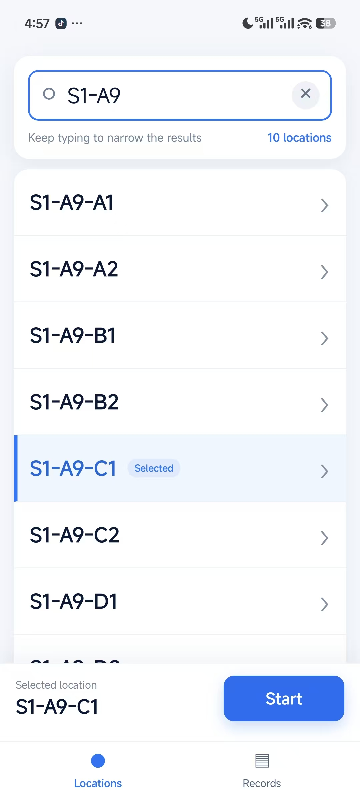
2. Record a Carton
- Select Carton, place the full Carton Number in view, and take a photo.
- Select the correct result and tap Confirm Carton.
- If no result is correct, tap Enter Manually and enter the full Carton Number.
- Enter the counted Actual quantity for every TPIN in the carton.
- Check all values, then tap Save Carton.
Use whole numbers greater than 0. Do not skip any TPIN listed in the carton.
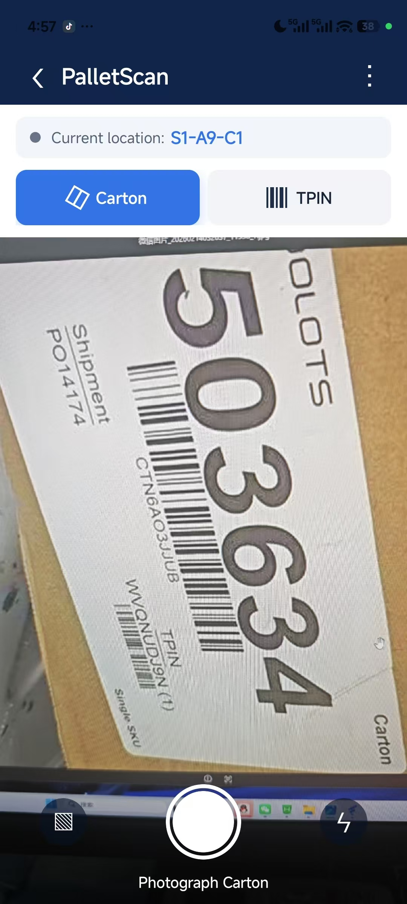
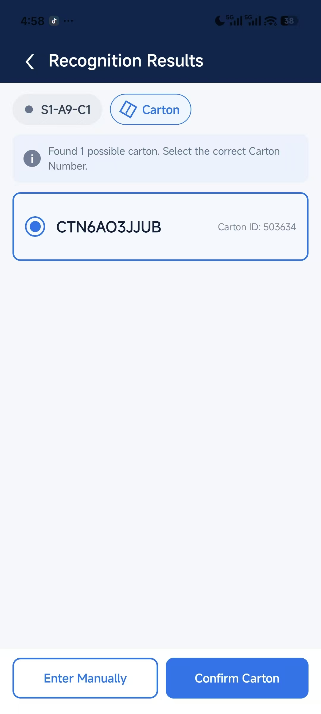
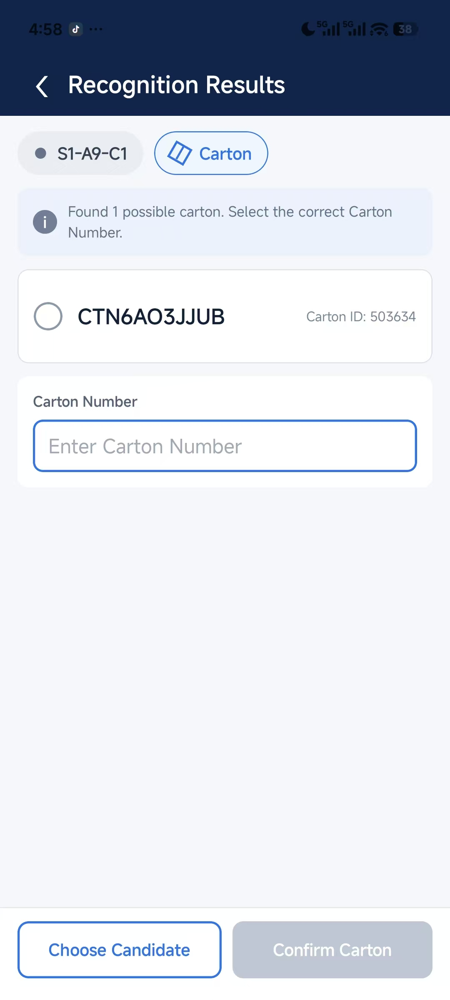
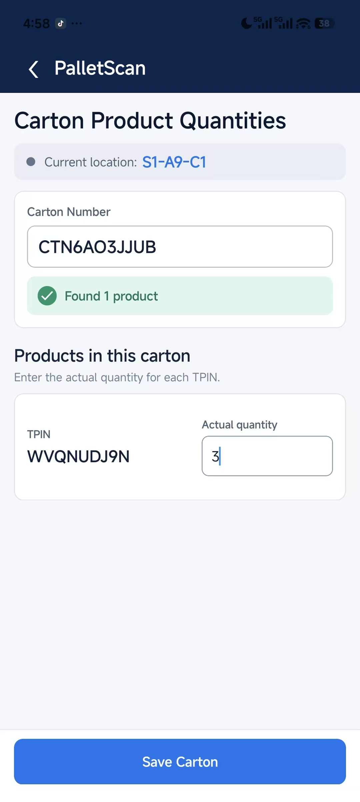
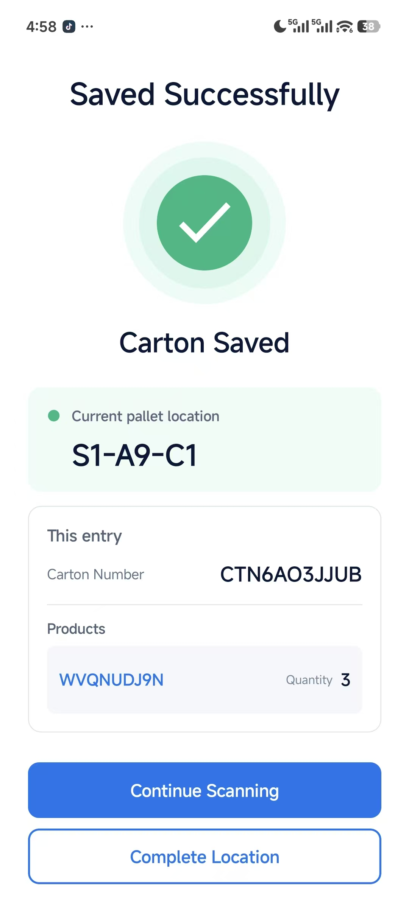
3. Record a TPIN
- Select TPIN, place the full TPIN in view, and take a photo.
- Select the correct result and tap Confirm TPIN.
- If no result is correct, tap Enter Manually and enter the full TPIN.
- Enter the counted Actual quantity.
- Check the TPIN and quantity, then tap Save.
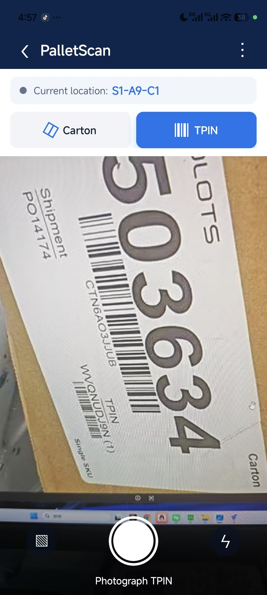
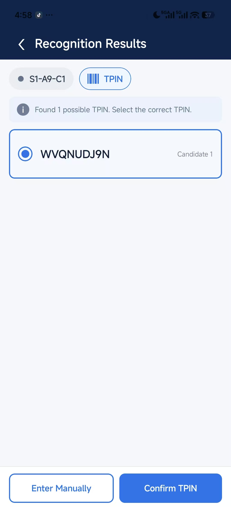
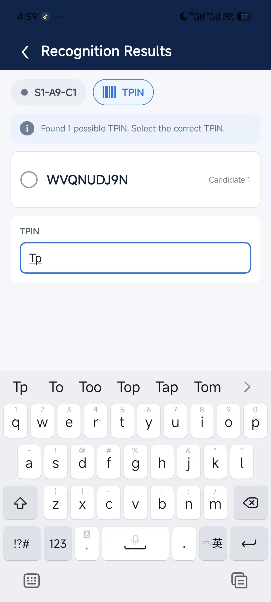
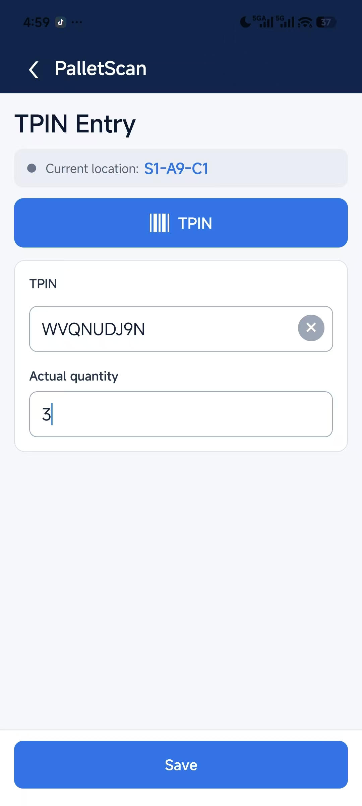
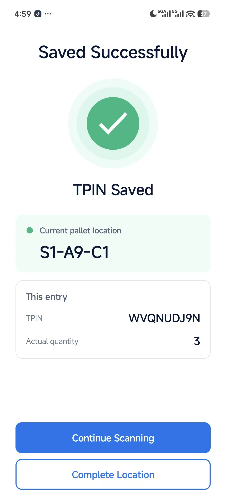
4. After saving
Continue ScanningKeep the current location and scan another Carton or TPIN.
Complete LocationFinish this location and return to location selection.
When you move to another pallet location, always choose Complete Location and select the new location.